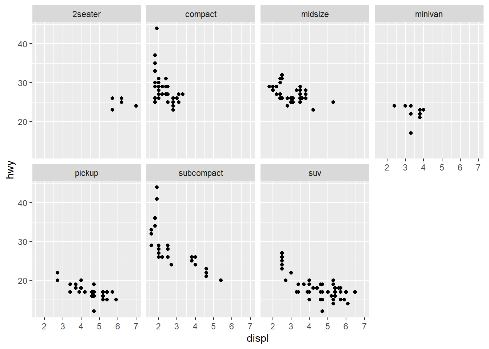

library(tidyverse)
#> ── Attaching packages ─────────────────────────────────────── tidyverse 1.3.1 ──
#> ✔ ggplot2 3.3.6 ✔ purrr 0.3.4
#> ✔ tibble 3.1.7 ✔ dplyr 1.0.9
#> ✔ tidyr 1.2.0 ✔ stringr 1.4.0
#> ✔ readr 2.1.2 ✔ forcats 0.5.1
#> ── Conflicts ────────────────────────────────────────── tidyverse_conflicts() ──
#> ✖ dplyr::filter() masks stats::filter()
#> ✖ dplyr::lag() masks stats::lag()8 R for Data Sciences
The main reference for this Chapter is [1].
8.1 tibble
tidyverse mainly deals with tibble instead of data.frame. Therefore this is where we start.
tibble is a data.frame with different attributes and requirements. The package tibble provides support for tibble. It is included in tidyverse. To load it, you just use the code:
8.1.1 Create tibbles
Here is an example of creating tibbles.
Example 8.1
Note that it is more flexible to create a tibble since tibble() will automatically recycle inputs and allows you to refer to variables that you just created.
Note
In the past (for a very long time), when using data.frame() to create a data.frame, it will automatically convert strings to factors. This is changed recently that the default setting is not to convert.
When using tibble() to create a tibble, the type of the inputs will never be changed.
Note
In tibble you may use nonsyntactic names as column names, which are invalid R variable names. To refer to these variables, you need to surround them with backticks `.
8.1.2 Differences between tibble and data.frame.
8.1.2.1 Printing
Tibbles have a refined print method that shows only the first 10 rows and all the columns that fit on screen.
deck <- tibble(suit=rep(c('spades', 'hearts', 'clubs', 'diamonds'), 13), face=rep(1:13, 4))
deck
#> # A tibble: 52 × 2
#> suit face
#> <chr> <int>
#> 1 spades 1
#> 2 hearts 2
#> 3 clubs 3
#> 4 diamonds 4
#> 5 spades 5
#> 6 hearts 6
#> 7 clubs 7
#> 8 diamonds 8
#> 9 spades 9
#> 10 hearts 10
#> # … with 42 more rows8.1.2.2 Subsetting
To get a single value, [[]] or $ should be used, just like for data.frame. These two are almost the same. The only difference is that [[]] accepts positions, but $ only accepts names.
To be used in a pipe, the special placeholder . will be used.
We will talk about pipes later.
8.1.3 %>% symbol
%>% is the pipeline symbol, which is another way to connect several functions. Most functions in tidyverse have the first argument data, and both the input data and the output are tibbles. The syntax here is that data %>% function(arguments) is the same as function(data, arguments). The benefit is that it is easier to have many functions consecutively applied to the data. Please see the following example.
data %>% function1(arguments1)
%>% function2(arguments2)
%>% function3(arguments3)
%>% function4(arguments4)
function4(function3(function2(function1(data, arguments1), arguments2), arguments3), arguments4)
data2 <- function1(data, arguments1)
data3 <- function2(data2, arguments2)
data4 <- function3(data3, arguments3)
function4(data4, arguments4)The readability of the first one is much better than the second one. Comparing to the third one, we don’t need to create a lot of intermedia temporary variables.
8.2 Tidy Data
The same underlying data can be represented in multiple ways. The following example shows the same data organized in four different ways.
Example 8.2 These tibbles are provided by tidyr. You could directly load it from tidyverse.
table1
table2
table2
#> # A tibble: 12 × 4
#> country year type count
#> <chr> <int> <chr> <int>
#> 1 Afghanistan 1999 cases 745
#> 2 Afghanistan 1999 population 19987071
#> 3 Afghanistan 2000 cases 2666
#> 4 Afghanistan 2000 population 20595360
#> 5 Brazil 1999 cases 37737
#> 6 Brazil 1999 population 172006362
#> 7 Brazil 2000 cases 80488
#> 8 Brazil 2000 population 174504898
#> 9 China 1999 cases 212258
#> 10 China 1999 population 1272915272
#> 11 China 2000 cases 213766
#> 12 China 2000 population 1280428583table3
- Spread across two tibbles.
table4a
#> # A tibble: 3 × 3
#> country `1999` `2000`
#> * <chr> <int> <int>
#> 1 Afghanistan 745 2666
#> 2 Brazil 37737 80488
#> 3 China 212258 213766
table4b
#> # A tibble: 3 × 3
#> country `1999` `2000`
#> * <chr> <int> <int>
#> 1 Afghanistan 19987071 20595360
#> 2 Brazil 172006362 174504898
#> 3 China 1272915272 1280428583Definition 8.1 A dataset is tidy if
- Each variable have its own column.
- Each observation have its own row.
- Each value have its oven cell.
These three conditions are interrelated because it is impossible to only satisfy two of the three. In pratical, we need to follow the instructions:
- Put each dataset in a tibble.
- Put each variable in a column.
Tidy data is a consistent way to organize your data in R. The main advantages are:
- It is one consistent way of storing data. In other words, this is a consistent data structure that can be used in many cases.
- To placing variables in columns allows R’s vectorized nature to shine.
All packages in the tidyverse are designed to work with tidy data.
8.2.1 Tidying datasets
Most datasets are untidy:
- One variable might be spread across multiple columns.
- One observation might be scattered across multiple rows.
8.2.1.1 pivot_longer()
A common problem is that the column names are not names of variables, but values of a variable. For example, table4a above has columns 1999 and 2000. These two names are actually the values of a variable year. In addition, each row represents two observations, not one.
To tidy this type of dataset, we need to gather those columns into a new pair of variables. We need three parameters:
- The set of columns that represent values. In this case, those are
1999and2000. - The name of the variable. In this case, it is
year. -The name of the variable whose values are spread over the cells. In this case, it is the number ofcases.
Then we apply pivot_longer().
We may also use the pipe %>% symbol.
We can do the similar thing to table4b. Then we could combine the two tibbles together.
tidy4a <- table4a %>%
pivot_longer(cols=c(`1999`, `2000`), names_to='year', values_to='cases')
tidy4b <- table4b %>%
pivot_longer(cols=c(`1999`, `2000`), names_to='year', values_to='population')
left_join(tidy4a, tidy4b)
#> Joining, by = c("country", "year")
#> # A tibble: 6 × 4
#> country year cases population
#> <chr> <chr> <int> <int>
#> 1 Afghanistan 1999 745 19987071
#> 2 Afghanistan 2000 2666 20595360
#> 3 Brazil 1999 37737 172006362
#> 4 Brazil 2000 80488 174504898
#> 5 China 1999 212258 1272915272
#> 6 China 2000 213766 1280428583pivot_longer() is an updated approach to gather(), designed to be both simpler to use and to handle more use cases. We recommend you use pivot_longer() for new code; gather() isn’t going away but is no longer under active development.
8.2.1.2 pivot_wider()
Another issuse is that an observation is scattered across multiple rows. Take table2 as an example. An observation is a country in a year, but each observation is spread across two rows.
table2
#> # A tibble: 12 × 4
#> country year type count
#> <chr> <int> <chr> <int>
#> 1 Afghanistan 1999 cases 745
#> 2 Afghanistan 1999 population 19987071
#> 3 Afghanistan 2000 cases 2666
#> 4 Afghanistan 2000 population 20595360
#> 5 Brazil 1999 cases 37737
#> 6 Brazil 1999 population 172006362
#> 7 Brazil 2000 cases 80488
#> 8 Brazil 2000 population 174504898
#> 9 China 1999 cases 212258
#> 10 China 1999 population 1272915272
#> 11 China 2000 cases 213766
#> 12 China 2000 population 1280428583We could apply pivot_wider() to make it tidy. Here we need two arguments.
- The column that contains variable names. Here, it’s
type. - The column that contains values forms multiple variables. Here, it’s
count.
pivot_wider(table2, names_from='type', values_from='count')
#> # A tibble: 6 × 4
#> country year cases population
#> <chr> <int> <int> <int>
#> 1 Afghanistan 1999 745 19987071
#> 2 Afghanistan 2000 2666 20595360
#> 3 Brazil 1999 37737 172006362
#> 4 Brazil 2000 80488 174504898
#> 5 China 1999 212258 1272915272
#> 6 China 2000 213766 1280428583We can also use the pipe symbol %>%.
table2 %>% pivot_wider(names_from='type', values_from='count')
#> # A tibble: 6 × 4
#> country year cases population
#> <chr> <int> <int> <int>
#> 1 Afghanistan 1999 745 19987071
#> 2 Afghanistan 2000 2666 20595360
#> 3 Brazil 1999 37737 172006362
#> 4 Brazil 2000 80488 174504898
#> 5 China 1999 212258 1272915272
#> 6 China 2000 213766 1280428583pivot_wider() is an updated approach to spread(), designed to be both simpler to use and to handle more use cases. We recommend you use pivot_wider() for new code; spread() isn’t going away but is no longer under active development.
8.2.1.3 separate()
If we would like to split one columns into multiple columns since there are more than one values in a cell, we could use separate().
separate(table3, rate, into=c('cases', 'population'))
#> # A tibble: 6 × 4
#> country year cases population
#> <chr> <int> <chr> <chr>
#> 1 Afghanistan 1999 745 19987071
#> 2 Afghanistan 2000 2666 20595360
#> 3 Brazil 1999 37737 172006362
#> 4 Brazil 2000 80488 174504898
#> 5 China 1999 212258 1272915272
#> 6 China 2000 213766 1280428583We could also use the pipe symbol %>%.
table3 %>% separate(rate, into=c('cases', 'population'))
#> # A tibble: 6 × 4
#> country year cases population
#> <chr> <int> <chr> <chr>
#> 1 Afghanistan 1999 745 19987071
#> 2 Afghanistan 2000 2666 20595360
#> 3 Brazil 1999 37737 172006362
#> 4 Brazil 2000 80488 174504898
#> 5 China 1999 212258 1272915272
#> 6 China 2000 213766 1280428583Using separate, the first argument is the column to be separated. into is where you store the parsed data. If no arguments are given, separate() will split values wherever it sees a non-alphanumeric character. If you would like to specify a separator, you may use the sep argument.
- If
sepis set to be a character, the column will be separated by the character. - If
sepis set to be a vector of integers, the column will be separated by the positions.
separate(table3, rate, into=c('cases', 'population'), sep='/')
#> # A tibble: 6 × 4
#> country year cases population
#> <chr> <int> <chr> <chr>
#> 1 Afghanistan 1999 745 19987071
#> 2 Afghanistan 2000 2666 20595360
#> 3 Brazil 1999 37737 172006362
#> 4 Brazil 2000 80488 174504898
#> 5 China 1999 212258 1272915272
#> 6 China 2000 213766 1280428583Note that in this example, since into only has two columns, the rest of the data are lost.
Another useful argument is convert. After separation, the columns are still character columns. If we set convert=TRUE, the columns will be automatically converted into better types if possible.
separate(table3, rate, into=c('cases', 'population'), convert=TRUE)
#> # A tibble: 6 × 4
#> country year cases population
#> <chr> <int> <int> <int>
#> 1 Afghanistan 1999 745 19987071
#> 2 Afghanistan 2000 2666 20595360
#> 3 Brazil 1999 37737 172006362
#> 4 Brazil 2000 80488 174504898
#> 5 China 1999 212258 1272915272
#> 6 China 2000 213766 12804285838.2.1.4 unite()
unite() is the inverse of separate(). The syntax is straghtforward. The default separator is _.
8.3 dplyr
dplyr is a package used to manipulate data. Here we will just introduce the most basic functions. We will use nycflights13::flights as the example. This dataset comes from the US Bureau of Transportation Statistics. The document can be found here.
To load the dataset, please use the following code.
library(nycflights13)
flights
#> # A tibble: 336,776 × 19
#> year month day dep_time sched_dep_time dep_delay arr_time sched_arr_time
#> <int> <int> <int> <int> <int> <dbl> <int> <int>
#> 1 2013 1 1 517 515 2 830 819
#> 2 2013 1 1 533 529 4 850 830
#> 3 2013 1 1 542 540 2 923 850
#> 4 2013 1 1 544 545 -1 1004 1022
#> 5 2013 1 1 554 600 -6 812 837
#> 6 2013 1 1 554 558 -4 740 728
#> 7 2013 1 1 555 600 -5 913 854
#> 8 2013 1 1 557 600 -3 709 723
#> 9 2013 1 1 557 600 -3 838 846
#> 10 2013 1 1 558 600 -2 753 745
#> # … with 336,766 more rows, and 11 more variables: arr_delay <dbl>,
#> # carrier <chr>, flight <int>, tailnum <chr>, origin <chr>, dest <chr>,
#> # air_time <dbl>, distance <dbl>, hour <dbl>, minute <dbl>, time_hour <dttm>8.3.1 filter()
filter() allows you to subset observations based on their values. The first argument is the name of the tibble. The rest are the expressions that filter the data. Please see the following examples.
flights %>% filter(month==1, day==1)
#> # A tibble: 842 × 19
#> year month day dep_time sched_dep_time dep_delay arr_time sched_arr_time
#> <int> <int> <int> <int> <int> <dbl> <int> <int>
#> 1 2013 1 1 517 515 2 830 819
#> 2 2013 1 1 533 529 4 850 830
#> 3 2013 1 1 542 540 2 923 850
#> 4 2013 1 1 544 545 -1 1004 1022
#> 5 2013 1 1 554 600 -6 812 837
#> 6 2013 1 1 554 558 -4 740 728
#> 7 2013 1 1 555 600 -5 913 854
#> 8 2013 1 1 557 600 -3 709 723
#> 9 2013 1 1 557 600 -3 838 846
#> 10 2013 1 1 558 600 -2 753 745
#> # … with 832 more rows, and 11 more variables: arr_delay <dbl>, carrier <chr>,
#> # flight <int>, tailnum <chr>, origin <chr>, dest <chr>, air_time <dbl>,
#> # distance <dbl>, hour <dbl>, minute <dbl>, time_hour <dttm>8.3.2 select()
select() allows you to filter columns. It is very similar to slicing [].
8.3.3 mutate()
mutate() is used to add new columns that are functions of existing columns.
flights %>% mutate(gain=arr_delay-dep_delay, hours=air_time/60, gain_per_hour=gain/hours)
#> # A tibble: 336,776 × 22
#> year month day dep_time sched_dep_time dep_delay arr_time sched_arr_time
#> <int> <int> <int> <int> <int> <dbl> <int> <int>
#> 1 2013 1 1 517 515 2 830 819
#> 2 2013 1 1 533 529 4 850 830
#> 3 2013 1 1 542 540 2 923 850
#> 4 2013 1 1 544 545 -1 1004 1022
#> 5 2013 1 1 554 600 -6 812 837
#> 6 2013 1 1 554 558 -4 740 728
#> 7 2013 1 1 555 600 -5 913 854
#> 8 2013 1 1 557 600 -3 709 723
#> 9 2013 1 1 557 600 -3 838 846
#> 10 2013 1 1 558 600 -2 753 745
#> # … with 336,766 more rows, and 14 more variables: arr_delay <dbl>,
#> # carrier <chr>, flight <int>, tailnum <chr>, origin <chr>, dest <chr>,
#> # air_time <dbl>, distance <dbl>, hour <dbl>, minute <dbl>, time_hour <dttm>,
#> # gain <dbl>, hours <dbl>, gain_per_hour <dbl>If you only want to see the new columns, transmute() can be used.
flights %>% transmute(gain=arr_delay-dep_delay, hours=air_time/60, gain_per_hour=gain/hours)
#> # A tibble: 336,776 × 3
#> gain hours gain_per_hour
#> <dbl> <dbl> <dbl>
#> 1 9 3.78 2.38
#> 2 16 3.78 4.23
#> 3 31 2.67 11.6
#> 4 -17 3.05 -5.57
#> 5 -19 1.93 -9.83
#> 6 16 2.5 6.4
#> 7 24 2.63 9.11
#> 8 -11 0.883 -12.5
#> 9 -5 2.33 -2.14
#> 10 10 2.3 4.35
#> # … with 336,766 more rowsHere are an (incomplete) list of supported operators and functions.
- Arithmetic operators:
+,-,*,/,^. - Modular arithmetic:
%/%(integer division),%%(remainder). - Logs:
log(),log2(),log10(). - Cumulative and rolling aggregates:
cumsum(),cumprod(),cummin(),cummax(),cummean() - Logical comparisons:
<,<=,>,>=,!=.
8.3.4 summarize() and group_by()
summarize() collapses a dataset to a single row. It computes values across all rows. It is usually paired with group_by(). Here are some examples.
Example 8.3
flights %>% group_by(year, month, day) %>%
summarize(delay=mean(dep_delay, na.rm=TRUE))
#> `summarise()` has grouped output by 'year', 'month'. You can override using the
#> `.groups` argument.
#> # A tibble: 365 × 4
#> # Groups: year, month [12]
#> year month day delay
#> <int> <int> <int> <dbl>
#> 1 2013 1 1 11.5
#> 2 2013 1 2 13.9
#> 3 2013 1 3 11.0
#> 4 2013 1 4 8.95
#> 5 2013 1 5 5.73
#> 6 2013 1 6 7.15
#> 7 2013 1 7 5.42
#> 8 2013 1 8 2.55
#> 9 2013 1 9 2.28
#> 10 2013 1 10 2.84
#> # … with 355 more rowsExample 8.4
delays <- flights %>%
group_by(dest) %>%
summarize(
count=n(),
dist=mean(distance, na.rm=TRUE),
delay=mean(arr_delay, na.rm=TRUE)
) %>%
filter(count>20, dest!='HNL')
delays
#> # A tibble: 96 × 4
#> dest count dist delay
#> <chr> <int> <dbl> <dbl>
#> 1 ABQ 254 1826 4.38
#> 2 ACK 265 199 4.85
#> 3 ALB 439 143 14.4
#> 4 ATL 17215 757. 11.3
#> 5 AUS 2439 1514. 6.02
#> 6 AVL 275 584. 8.00
#> 7 BDL 443 116 7.05
#> 8 BGR 375 378 8.03
#> 9 BHM 297 866. 16.9
#> 10 BNA 6333 758. 11.8
#> # … with 86 more rowsgroup_by() can also be used together with mutate() and filter().
Example 8.5
flights %>%
group_by(dest) %>%
filter(n() > 365) %>%
filter(arr_delay > 0) %>%
mutate(prop_delay = arr_delay / sum(arr_delay)) %>%
select(year:day, dest, arr_delay, prop_delay)
#> # A tibble: 131,106 × 6
#> # Groups: dest [77]
#> year month day dest arr_delay prop_delay
#> <int> <int> <int> <chr> <dbl> <dbl>
#> 1 2013 1 1 IAH 11 0.000111
#> 2 2013 1 1 IAH 20 0.000201
#> 3 2013 1 1 MIA 33 0.000235
#> 4 2013 1 1 ORD 12 0.0000424
#> 5 2013 1 1 FLL 19 0.0000938
#> 6 2013 1 1 ORD 8 0.0000283
#> 7 2013 1 1 LAX 7 0.0000344
#> 8 2013 1 1 DFW 31 0.000282
#> 9 2013 1 1 ATL 12 0.0000400
#> 10 2013 1 1 DTW 16 0.000116
#> # … with 131,096 more rows
Note
We already use it in the above examples. This is to compute the number of observations in the current group. This function is implemented specifically for each data source and can only be used from within summarise(), mutate() and filter().
8.4 ggplot2
This is the graphing package for R in tidyverse. ggplot2 implements the grammar of graphics, a coherent system for describing and building graphs. With ggplot2, you can do more faster by learning one system and applying it in many places. The main function is ggplot().
ggplot2 will be uploaded with tidyverse.
We use the dataset mpg as the example. This dataset comes with ggplot2. Once you load ggplot2 you can directly find the dataset by typing mpg.
mpg
#> # A tibble: 234 × 11
#> manufacturer model displ year cyl trans drv cty hwy fl class
#> <chr> <chr> <dbl> <int> <int> <chr> <chr> <int> <int> <chr> <chr>
#> 1 audi a4 1.8 1999 4 auto… f 18 29 p comp…
#> 2 audi a4 1.8 1999 4 manu… f 21 29 p comp…
#> 3 audi a4 2 2008 4 manu… f 20 31 p comp…
#> 4 audi a4 2 2008 4 auto… f 21 30 p comp…
#> 5 audi a4 2.8 1999 6 auto… f 16 26 p comp…
#> 6 audi a4 2.8 1999 6 manu… f 18 26 p comp…
#> 7 audi a4 3.1 2008 6 auto… f 18 27 p comp…
#> 8 audi a4 quattro 1.8 1999 4 manu… 4 18 26 p comp…
#> 9 audi a4 quattro 1.8 1999 4 auto… 4 16 25 p comp…
#> 10 audi a4 quattro 2 2008 4 manu… 4 20 28 p comp…
#> # … with 224 more rowsThe syntax for ggplot() is ::: {.cell}
:::
ggplot(data=<DATA>) create a plot without any geometric elements. It simply creates the canvas paired with the dataset.
Then you add one or more layers to ggplot() to complete the graph. The function <GEOM_FUNCTION>(mapping = aes(<MAPPINGS>)) adds a layer to the plot. You may add as many layers as you want.
Each geom function takes a mapping argument. This defines how variables in the dataset are mapped to visual properties. mapping is always paired with aes(x=, y=). This
Here is a quick example.

8.4.1 Aesthetic mappings
An aesthetic is a visual property of the objects in your plot. It include things like the size, the shape or the color of the points. The variables set in aes() will change the aesthetic apperance of the geometric objects according to the variables. If the variables are set outside aes(), the apperance will be fixed. Please see the following examples.
Note that the variables in aes() other than x and y will automatically get legends.


8.4.2 facet
For categorical data, you can split the plot into facets. This facet function will be attached as a layer followed by a + sign.
- To facet your plot by a single variable, use
facet_wrap(). The first argument should be a formula, which you create with~followed by a variable name. - To facet your plot by two variables, use
facet_grid(). The first argument is a formula which contains two variable names separated by a~.
Example 8.6

You may look at the variables to see the relations with the plot.
Example 8.7

You may look at the variables to see the relations with the plot.
Tip
The ~ symbol is used to define a formula. The formula is a R object, which provide the pattern of a “formula”. Therefore drv~cyl means that drv is a function of cyl.
8.4.3 geom objects
A geom is the geometrical object that a plot uses to represent data. When drawing plots, you just need to attach those geometrical objects to a ggplot canvas with + symbol. Some of the geometrical objects can automatically do statistical transformations. The statistical transformations is short for stat, and the stat argument in those geom will show which statistical transformations are applied.
geom_point()draws scatter plot.geom_smooth()draws smooth line approximation.geom_bar()draws bar plot.geom_histogram()draws histogram.
The arguments can be written in ggplot(). All the later geom will get those arguments from ggplot(). If the arguments are written again in geom object, it will override the ggplot() arguments.
Example 8.8

ggplot(data = mpg) +
geom_smooth(mapping = aes(x = displ, y = hwy), formula = y ~ x, method = "loess")
ggplot(data = mpg) +
geom_smooth(mapping = aes(x = displ, y = hwy, linetype = drv), formula = y ~ x, method = "loess")
ggplot(data = mpg) +
geom_point(mapping = aes(x = displ, y = hwy)) +
geom_smooth(mapping = aes(x = displ, y = hwy), formula = y ~ x, method = "loess")
ggplot(data = mpg, mapping = aes(x = displ, y = hwy)) +
geom_point(mapping = aes(color = class)) +
geom_smooth(
data = filter(mpg, class == "subcompact"),
se = FALSE,
formula = y ~ x, method = "loess"
)
8.5 Examples
8.5.1 WHO TB dataset
Let us explore the tuberculosis cases data. The dataset is provided by WHO and can be downloaded from here. tidyr also provides the dataset. You may directly get the dataset after you load tidyr from tidyverse. The variable description can be found from tidyr documentations.
library(tidyverse)
who
#> # A tibble: 7,240 × 60
#> country iso2 iso3 year new_sp_m014 new_sp_m1524 new_sp_m2534 new_sp_m3544
#> <chr> <chr> <chr> <int> <int> <int> <int> <int>
#> 1 Afghani… AF AFG 1980 NA NA NA NA
#> 2 Afghani… AF AFG 1981 NA NA NA NA
#> 3 Afghani… AF AFG 1982 NA NA NA NA
#> 4 Afghani… AF AFG 1983 NA NA NA NA
#> 5 Afghani… AF AFG 1984 NA NA NA NA
#> 6 Afghani… AF AFG 1985 NA NA NA NA
#> 7 Afghani… AF AFG 1986 NA NA NA NA
#> 8 Afghani… AF AFG 1987 NA NA NA NA
#> 9 Afghani… AF AFG 1988 NA NA NA NA
#> 10 Afghani… AF AFG 1989 NA NA NA NA
#> # … with 7,230 more rows, and 52 more variables: new_sp_m4554 <int>,
#> # new_sp_m5564 <int>, new_sp_m65 <int>, new_sp_f014 <int>,
#> # new_sp_f1524 <int>, new_sp_f2534 <int>, new_sp_f3544 <int>,
#> # new_sp_f4554 <int>, new_sp_f5564 <int>, new_sp_f65 <int>,
#> # new_sn_m014 <int>, new_sn_m1524 <int>, new_sn_m2534 <int>,
#> # new_sn_m3544 <int>, new_sn_m4554 <int>, new_sn_m5564 <int>,
#> # new_sn_m65 <int>, new_sn_f014 <int>, new_sn_f1524 <int>, …Based on the description of varaibles, we understand that
country,iso2,iso3are all refered to country names (and thus they are redundant).- Columns after
year, likenew_sp_m014etc., are counts of new TB cases recorded by groups. The code has three parts, most of which are separated by_(but there are some exceptions).- The first part is always
new. - The second part is a code for method of diagnosis:
rel= relapse,sn= negative pulmonary smear,sp= positive pulmonary smear,ep= extrapulmonary.
- The third part is a code for gender (
f= female,m= male) and a code for age group:014= 0-14 yrs of age,1524= 15-24 years of age,2534= 25 to 34 years of age,3544= 35 to 44 years of age,4554= 45 to 54 years of age,5564= 55 to 64 years of age,65= 65 years of age or older
- The first part is always
Therefore to clean the data, we need the following steps.
Example 8.9 Gather together all the columns from new_sp_m014 to newrel_f65.
Then we use stringr::str_replace() to replace newrel by new_rel.
Example 8.10 Parse the column group into columns.
Example 8.11 Pick the columns that matters.
We could use the pipe symbol to connect all the above steps.
Tip
tidywho <- who %>%
pivot_longer(cols=5:60, names_to='group', values_to='counts') %>%
mutate(key=str_replace(group, 'newrel', 'new_rel')) %>%
separate(key, into=c('new', 'type', 'genderage'), sep='_') %>%
separate(genderage, into=c('gender', 'age'), sep=1) %>%
select('country', 'year', 'type', 'gender', 'age', 'counts')8.5.2 US Babynames
Let us use R to solve the babynames dataset again.
The first task is to read those files.
Example 8.12 Please read files and put the data into one tibble. The dataset can be downloaded from here as a zip file.
Tip
path <- 'assessts/datasets/babynames/yob'
dfs <- map(1880:2010, function(y){
filepath <- paste0(path, as.character(y), '.txt')
df_individual <- tibble(read.csv(filepath, header=FALSE))
names(df_individual) <- c('name', 'gender', 'counts')
df_individual$year <- y
df_individual
})
df <- bind_rows(dfs)Example 8.13 Please plot the total births by gender and year.

Example 8.14 Please compute the proportions of each name relateive to the total number of births per year per gender.
Tip
df %>%
group_by(gender, year) %>%
mutate(prop=counts/sum(counts))
#> # A tibble: 1,690,784 × 5
#> # Groups: gender, year [262]
#> name gender counts year prop
#> <chr> <chr> <int> <int> <dbl>
#> 1 Mary F 7065 1880 0.0776
#> 2 Anna F 2604 1880 0.0286
#> 3 Emma F 2003 1880 0.0220
#> 4 Elizabeth F 1939 1880 0.0213
#> 5 Minnie F 1746 1880 0.0192
#> 6 Margaret F 1578 1880 0.0173
#> 7 Ida F 1472 1880 0.0162
#> 8 Alice F 1414 1880 0.0155
#> 9 Bertha F 1320 1880 0.0145
#> 10 Sarah F 1288 1880 0.0142
#> # … with 1,690,774 more rowsExample 8.15 We would like to keep the first 100 names (by counts) in each year and save it as a new tibble top100.
Example 8.16 Please draw the trend of John, Harry, Mary in top100 by counts.

Example 8.17 Now we would like to analyze the ending of names. Please get a tibble that contains the counts of ending letter per year per gender. We mainly focus on 1910, 1960 and 2010.
Tip
df %>%
filter(year %in% c(1910, 1960, 2010)) %>%
mutate(ending=str_sub(name, -1, -1)) %>%
group_by(gender, year, ending) %>%
summarise(ending_counts=sum(counts)) %>%
ggplot() +
geom_bar(
mapping = aes(
x=ending,
y=ending_counts,
fill=year,
group=year
),
stat = "identity",
position = "dodge",
) +
facet_wrap(~gender, nrow=2)Example 8.18 Please draw the line plot to show the trending of certain letters through years. Here we choose d, n and y.
8.6 Exercises
Exercise 8.1 How can you tell if an object is a tibble?
Exercise 8.2 Compare and contrast the following operations on a data.frame and equivalent tibble. What is different? Why might the default data frame behaviors cause you frustration?
Exercise 8.3 If you have the name of a variable stored in an object, e.g., var <- "xyz", how can you extract the reference variable from a tibble? You may use the following codes to get a tibble.
Exercise 8.4 Practice referring to nonsyntactic names in the following data.frame by:
- Extracting the variable called 1.
- Creating a new column called 3, which is 2 divided by 1.
- Renaming the columns to one, two, and three:
Exercise 8.5 Both unite() and separate() have a remove argument. What does it do? Why would you set it to FALSE?
Exercise 8.6 Use flights dataset. Currently dep_time and sched_dep_time are convenient to look at, but hard to compute with because they’re not really continuous numbers. Convert them to a more convenient representation of number of minutes since midnight.
8.7 Projects
Exercise 8.7 Please make the following data tidy.
Exercise 8.8 Please use the flights dataset. Please find all flights that :
- Had an arrival delay of two or more hours.
- Flew to
IAHorHOU. - Were operated by
United,AmericanorDelta. - Departed in summer (July, August, and September).
- Arrived more than two hours late, but didn’t leave late.
- Were delayed by at least an hour, but made up over 30 minutes in flight.
- Departed between midnight and 6 a.m. (inclusive).
Exercise 8.9 Re-create the R code necessary to generate the following graphs. The dataset is mpg.